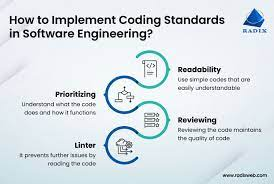

After only one week working with coding standards via ESLint on IntelliJ, the red squiggly line already haunts me at night. Fixing ESLint errors can be tedious, yet it is very well worth the time. Practicing coding standards can be very important for improving the quality of your code: it can help you learn a new language faster, improve the readability of your code, and set a framework for how you code in certain languages. This essay hopes to expand on these three key points.
Practicing healthy coding standards can help you to learn new languages faster. Because coding standards give you a sort of grammar for your code outside of just the general syntax for the language, it gives you a structure to follow that can make you more certain that the code you are typing out makes sense and will work, because you’ve written it that way before. Of course, sometimes things in coding standards are unnecessary like certain spaces or new lines, but it can help to follow these rules so that you can organize your thinking while coding: That way you can think less about the way your code looks while you type so that you can focus on what it does!
Coding standards also help you build good habits early on when using a new programming language. ESLint gives good hints for producing more memory or time efficient code, even when it isn’t necessary for a program to work. This means you can learn to code more efficiently early on, thus creating good habits because of practicing good coding standards.
It can be useful to practice good coding standards because doing so can improve the readability of your code. You can produce code that is perfectly functional without it being pretty. But, often, code will have to be refined over time. It could be you that goes back in to tune it up, or it could be another person. Either way, both you and that other person would be very grateful if you wrote legible code. Code that is legible follows coding standards to clearly separate different sections of code, making it clearer what the program is doing at any given point. Coding standards can also just make your code overall more reader friendly by laying down a consistent groundwork for how to read your code.
I like to think of coding standards as laying down a foundation for how you think in certain coding languages. A good analogy is thinking in different actual spoken languages. Different languages have different grammar and vocabulary, but you still have a preferred way of talking and using those grammar and vocabulary: a personality. Coding standards is your code’s personality. Although unnecessary at times, the way you format your code is unique to you and the way you think. Coding standards doesn’t have to follow a certain program like ESLint, it can just be your consistent way of coding in a certain programming language. By giving yourself a consistent “personality” for your code, it can help to organize your thoughts better and know what to expect from whatever code you produce. You can also retain good habits learned from using coding standard checking programs like ESLint by incorporating them in your code’s “personality.”
After reflecting on coding standards and what we’ve learned thus far, I no longer fear the red line, but I embrace it. Every time I notice the red line now, I don’t panic. I see it as an opportunity to learn something new. Oftentimes the error is something trivial or that can’t be helped, like when I initialize a variable and it needs to be used in the program, but sometimes it can be something very helpful like a suggestion to make my code more all-encompassing or efficient. Because of this, I no longer moan when I must add a new line at the end of my code to please ESLint because I know it’s worth it.